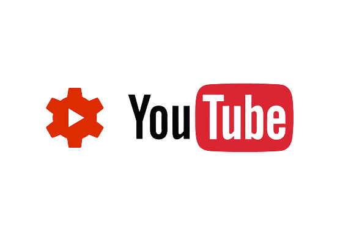

YouTube Creator Studio
A scalable experience that empowers casual creators to create with confidence and more serious creators to maximize their channels success.
What is YouTube Creator Studio?
The central hub where creators manage every part of their channel including customization, uploading videos, checking detailed analytics and responding to comments.

The Problem
Insights were discovered through usability testing, interviews and surveys.
Creators vary in both experience and goals for their channels which require different levels of guidance. However, YouTube does not adapt to these differences, creating friction for both casual creators trying to efficiently complete tasks and serious creators trying to optimize their performance.
Research Process
Recruitment
6 participants with vary levels of familiarity with YouTube Creator Studio. We prioritized recruiting a diverse range of users from casual vloggers to monetized content creators.
Research Question
How do different types of creators prioritize and use features within Creator Studio, and how do their needs differ?
Research goals
Task completion and usability: Evaluate the user's proficiency when performing fundamental tasks in Creator Studio including video uploading, scheduling and management features.
Navigation and learnability: Assess the ease of navigation and familiarity of YouTube's metadata fields, including how intuitively users interact with them.
Analytics comprehension and efficiency: Evaluate user's ability to interpret channel performance data and navigate the analytics dashboard.
Usability testing methods
Pre-test questionnaire in Google survey to gain information about who the participant is and their experiences.
8 scenario based tasks, each tackling certain usability objectives with varying difficulties.
Post-test interview to allow participant to reflect on the session and better understand their feelings as they were completing tasks.
Meet the creators
Insights were surfaced through thematic analysis, qualitative coding and affinity mapping.
The casual creator
An active user who manages a YouTube channel for their e-commerce business. They upload product tutorials, check analytics daily to monitor views, engagement and conversion rates. Their goal is to optimize their content for better business growth.
Pain points
"I feel dumb because I have no idea what any of these [terms] mean."
Insight: The complexity and ambiguity of terms used within the subtitling flow caused casual creators to misunderstand the use of certain features.
"I keep clicking on the wrong menu."
Insight: The current task flow in the subtitles editor lacks clarity, forcing users to navigate through multiple screens to access various subtitling options.
The serious creator
A university student who enjoys sharing travel vlogs. They upload every few months or so focusing more on the creative process and connecting with their friends rather than counting their subscribers.
Pain points
"The elements don't appear hoverable but actually are..?"
Insight: In the Analytics graph, many participants did not realize sections were clickable or hover-responsive resulting in missed opportunities for deeper insights and difficulty in completing task efficiently.
"I don't exactly know what to do with these analytics."
Insight: Terms used throughout infographics can be confusing causing serious creators to start skimming over helpful data they struggle understand.
"There's a lot to take in on this page."
Insight: Creators only have one point of access for viewing different data about their channel, forcing users to manually search for what they need.
Client Needs
The experience needed to remain scalable while supporting creators at different levels of confidence, motivation and channel maturity.
Concept Workshops
Workshop material can be added here as the case study expands.
Final Concepts
Final prototype details and concept rationale can be added here.
Key Takeaways
Reflection points and project learnings can be added here.